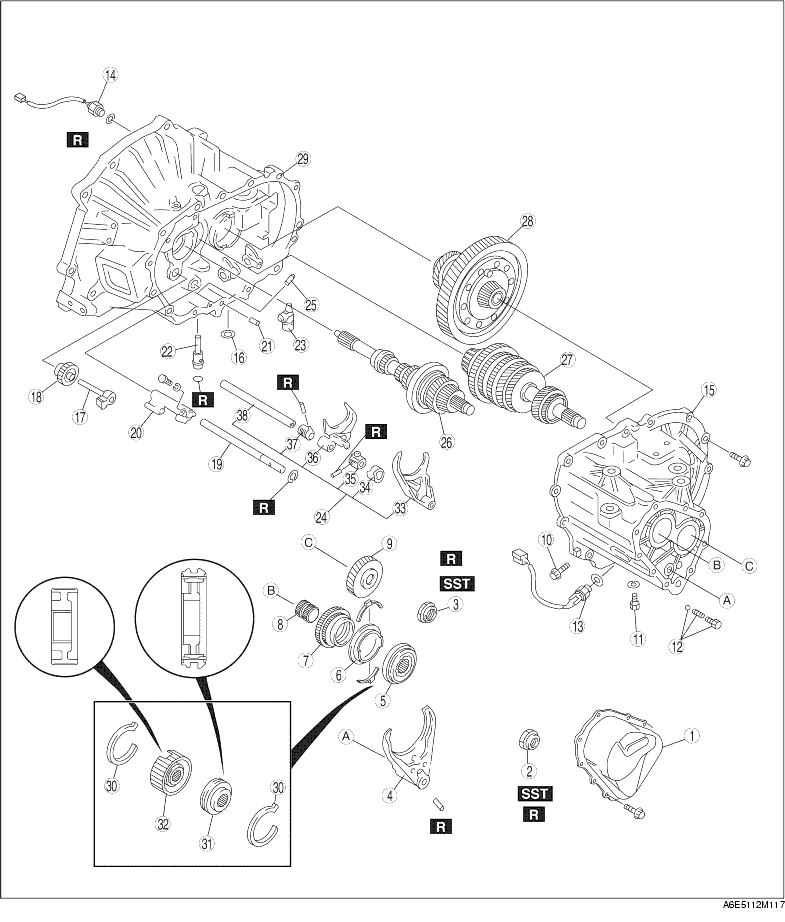

1. Disassemble in the order shown in the figure.

|
1 |
Rear cover |
|
2 |
Locknut (primary shaft) (See Locknut Disassembly Note) |
|
3 |
Locknut (secondary shaft) (See Locknut Disassembly Note) |
|
4 |
5th/reverse shift fork |
|
5 |
5th/reverse clutch hub component |
|
6 |
5th synchronizer ring |
|
7 |
5th gear |
|
8 |
Gear sleeve |
|
9 |
Secondary 5th gear |
|
10 |
Lock bolt |
|
11 |
Guide bolt |
|
12 |
Lock bolt, ball, and spring |
|
13 |
Back-up light switch |
|
14 |
Neutral switch |
|
15 |
Transaxle case component |
|
16 |
Magnet |
|
17 |
Reverse idler shaft |
|
18 |
Reverse idler gear |
|
19 |
5th/reverse shift rod |
|
20 |
5th/reverse shift rod end |
|
21 |
Pin |
|
22 |
Crank lever shaft |
|
23 |
Crank lever component |
|
24 |
Shift fork and shift rod component |
|
25 |
Push pin |
|
26 |
Primary shaft gear component |
|
27 |
Secondary shaft gear component |
|
28 |
Differential component |
|
29 |
Clutch housing |
|
30 |
Synchronizer key springs |
|
31 |
Clutch hub sleeve |
|
32 |
Clutch hub |
|
33 |
3rd/4th shift fork |
|
34 |
Interlock sleeve |
|
35 |
Control lever |
|
36 |
1st/2nd shift fork |
|
37 |
Control end |
|
38 |
Control rod |
1. Assemble the SST.
2. Lift the transaxle and mount it on the SST.
3. Lock the primary shaft with the SST.
4. Shift to 1st gear to lock the rotation of the primary shaft.
5. Bend back the caulking of locknuts using a chisel.
6. Remove the locknuts from the primary and secondary shafts.
1. Aligh the ends of the interlock sleeve and of the control lever (arrow). Turn the shift rod counterclockwise.
2. While holding the 1st/2nd shift fork with one hand and the 3rd/4th shift fork with the other, raise them both at the same time and shift each of the clutch hub sleeves.
3. Lift the control end and remove the steel, and at the same time, remove the control rod from the clutch housing.
4. Separate the shift rod and shift fork component from each of the clutch hub sleeves.